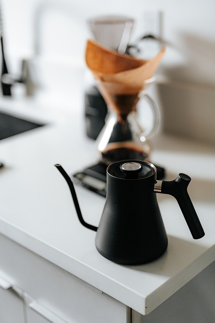

How to Make the Perfect Cup of Coffee
Step 1: Select Your Coffee Beans
The foundation of a great cup of coffee starts with selecting high-quality beans. Choose beans based on your flavor preferences—whether you like a dark roast for boldness or a light roast for a brighter flavor.

Coffee beans by Alexas_Fotos Pixabay.
Step 2: Measure the Coffee Grounds
Accurate measurement is key to the perfect cup. Generally, use two tablespoons of coffee per six ounces of water. Adjust to taste depending on your preference for a stronger or weaker brew.

Measuring coffee grounds by NoName_13 Pixabay.
Step 3: Grind the Coffee Beans
Grind your beans just before brewing to preserve freshness. For drip coffee, use a medium grind. If you're making espresso, aim for a fine grind, while a coarse grind works best for a French press.

Ground coffee by esliasfalla Pixabay.
Step 4: Brew Your Coffee
Once your beans are ground, it's time to brew! Whether you use a drip machine, French press, or pour-over, follow the specific brewing instructions for your chosen method. Ensure your water temperature is around 195-205°F (90-96°C) for optimal extraction.

Brewing coffee by DiDeeChen Pixabay.
Step 5: Serve and Enjoy
Once brewed, pour your coffee into a pre-warmed mug and enjoy! Feel free to add milk, cream, or sugar to your liking, or savor it black to appreciate the full flavor profile of the beans.

Steaming coffee mug by CedarCreation Pixabay.